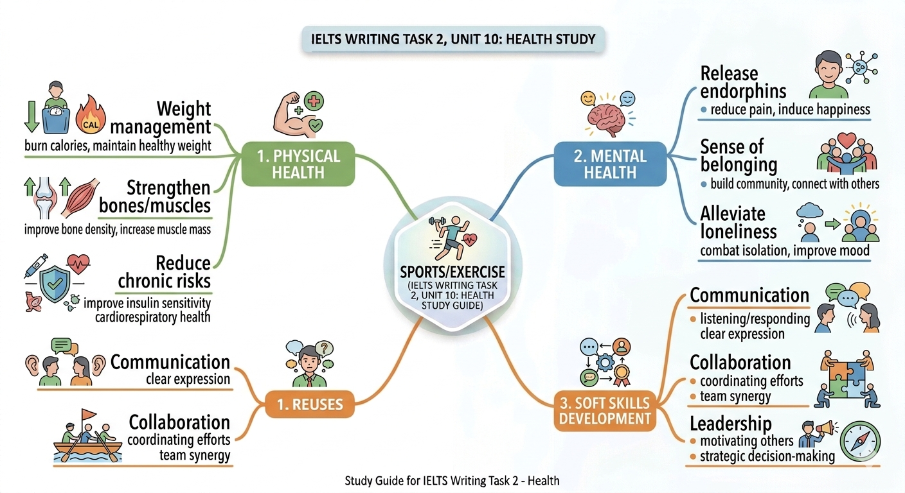

Unit 6: Media and Communication

Phân tích chuyên sâu về Broadcast Media, Print Media & Digital Platforms trong kỳ thi IELTS.
Tổng quan bài học
Truyền thông đã trở thành một phần thiết yếu của cuộc sống hiện đại nhờ sự phát triển không ngừng của công nghệ. Trong bài học này, chúng ta sẽ tập trung vào ba loại hình truyền thông phổ biến nhất trong đề thi IELTS:
Trọng tâm: Television (TV)
Trọng tâm: Newspapers, Books, Journals
Trọng tâm: Internet & Social Media
📺 1. Television: A Mass Communication Powerhouse
Ưu điểm (Advantages)
- 01. Review subjects: Giúp học sinh ôn tập kiến thức qua các kênh giáo dục quốc gia (VTV6, VTV7). Đặc biệt hữu ích cho các bạn fall behind in class.
- 02. Foster Creativity: Truyền cảm hứng để người xem sáng tác câu chuyện (write own stories) hoặc tác phẩm nghệ thuật riêng.
- 03. Broaden Horizons: Mở rộng kiến thức về lịch sử, văn hóa qua phim tài liệu (documentary films).
Key Vocabulary (TV)
Hạn chế (Drawbacks)
-
Major Distraction
Dễ gây xao nhãng khỏi việc học, dẫn đến việc lose track of time và trì hoãn (procrastination).
-
Harmful Content
Tiếp xúc với nội dung không phù hợp (harmful/inappropriate content) khiến trẻ em dễ bắt chước (imitate).
-
Health Issues
Giảm tương tác xã hội và các hoạt động thể chất, gây ra béo phì (obesity) và đau cổ/lưng.
📰 2. Print Media: The Traditional Power
Ưu điểm Nổi bật
Credibility (Đáng tin cậy) ▼
Được kiểm duyệt bởi các trained journalists và quy trình fact-checking gắt gao.
Tactile Experience (Xúc giác) ▼
Cảm giác lật từng trang giấy (flip through pages) và mùi hương sách mới (the smell of a freshly printed book).
Hạn chế Thực tế
| Aspect | Drawback |
|---|---|
| Reach | Limited reach (độ phủ hạn chế). |
| Speed | Slow production (tin bị outdated). |
| Cost | High printing & shipping fees. |
🌐 3. The Digital Era: Internet & Social Media
Proliferation of Content
Sự phát triển của khoa học công nghệ đã mở ra kỷ nguyên bùng nổ nội dung. Internet cung cấp một kho tàng tài liệu khổng lồ cho người học:
- Podcasts & Scientific Journals
- Educational Videos
- Open access data
Academic Phrase
Tác giả: Phạm Tiến Dũng Gia Sư
Vocabulary Master List (Practice 2 Core)
! Check Your Knowledge
1. Tại sao Print Media lại được coi là more trustworthy hơn Digital Media?
2. Dùng cụm từ nào để mô tả việc "quên mất thời gian" khi xem TV?
PRO TIP by Phạm Tiến Dũng Gia Sư
Khi thảo luận về lợi ích của Internet trong IELTS Speaking Part 3, đừng chỉ dùng "learn many things". Hãy nâng cấp lên: "Digital platforms empower individuals to engage in a lifelong learning journey by providing unprecedented access to a vast repository of specialized knowledge."